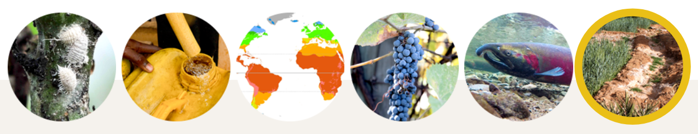

Cambio climático y Agricultura
2023-09-29
Temas de la clase
1.- Cambio climático y calentamiento global
Impactos del cambio climático en la agricultura y la seguridad alimentaria
Adaptación y mitigación en el sector agrícola
1. Cambio climático y calentamiento global
Introducción
Podemos observar un cambio significativo en la temperatura media global en los últimos 150 años y en los demás componentes principales del sistema climático.
- Este fenómeno se denomina cambio climático
Variabilidad climática
EL clima de la tierra varía de forma natural como resultado de la interacción entre:
- Fluctuaciones en la energía recibida desde el sol
- Cambios en la orbita terrestre
- El oceano y la atmósfera
- Erupciones volcánicas.
Este fenómeno se denómina variabilidad climática
Variabilidad climática
La variabilidad climática se refiere a las fluctuaciones climáticas naturales e incluye cmabios en los valores medios y la ocurrencia de eventos extremos.
Por su naturaleza el clima está constantemente cambiando
Cambio climático
El cambio climático se puede detectar si las variaciones estandares (ej, patrones de variabilidad climática) experimentan un cambio medible significativo en el largo plazo
- Las actividades humanas contribuyen al cambio climático al causar cambios en la cantidad de los gases de efecto invernadero en la atmósfera de la tierra.
Representación del cambio en el estado promedio del clima.
Gases de efecto invernadero
Son gases atmosféricos que absorven y emiten radiación
\(CO_2\)
Los mayores gases de efecto invernadero son:
Dioxido de carbono(\(CO_2\)):Metano(\(CH_4\)):Oxido nitroso(\(N_2O\)):Clorofluorocarburo(CFCs):Vapor de Agua(\(H_2O\)):
Balance entre las fuentes que emiten y capturan determinan la concentración de los gases.
Pregunta
La mayor diferencia entre cambio climático y variabilidad climática está asociado a la escala de tiempo de la variación observada.
¿Puedes reconocer cuaĺ de las siguientes corresponde a cambio climático y cuál a variabilidad climática?
Cambios diarios, estacionales, anuales o interanuales durante varios años.
Tendencias a largo plazo en la variabilidad durante las últimas décadas o siglos.
Calentamiento global
Calentamiento global
Uno de los efectos importantes del cambio climático es el aumento de la temperatura media global. Desde 1850, cada decada ha sido más calida que la anterior
Este fenómeno se llama calentamiento global.
Calentamiento global
El aumento de temperatura es a nivel global y es mayor a altas latitudes norte.
Estamos experimentando altas temperaturas medias globales, máximas temperatura del aire y de la superficie del oceano.
Causas del calentamiento global
Causas del calentamiento global
El efecto invernadero natural atrapa el calor del sol, aumentando la temperatura media de la tierra.
El efecto invernadero aumentado: las emisiones de gases de efecto invernadero por el ser humano amplifican la cantidad de calor retenido, causando que la atmósfera y la superficie de la tierra se calienten.
Entre 1970 al 2010 las emisiones globales de gases de efecto invernadero debido a la acción humana aumentó en más de 70%.
Efectos del cambio climático
El aumento de temperatura gatilla alteraciones en la circulación general de la atmósfera y océanos y en las condiciones climáticas medias.
Así, muchos ecosistemas están siendo afectados por el cambio climático.
Efectos del cambio climático
El cambio climático induce eventos de dos tipos:
1.- Eventos de comienzo lento
2.- Eventos extremos
Eventos de comienzo lento
Son, por ejemplo, cambios en los patrones de temperatura y precipitación. Como en el caso de la temperatura, los precipitacion media global está tambien cambiando.
Eventos extremos
Sequías:áreas afecatas por sequía se extenderan en extensión.Inundaciones:se volveran más frecuentes.Ciclones tropicales:aumentará la amenaza en las zonas que actualmente ocurren y aparecen en otras partes.
Efectos del cambio climático
periodos de secado (dry spells): menores que una sequíaInicio tardío y falso de las lluvias: el primero ocurre cuando el inicio de las lluvias ocurre más tarde que el patron normal. El segundo, es cuando el inicio de las lluvias parece haber empezado, pero repentinamente termina.
Preguntas
¿Cuáles de las siguientes sentencias son verdaderas?
1.- El cambio climático es causado por un aumento en las concentraciones de gases de efecto invernadero en la atmósfera.
2.- El cambio climático se refiere a una condición climática en el corto plazo.
3.- Calentamiento global y cmabio climático son lo mismo.
4.- El efecto invernadero es un fenómeno natural.
5.- Los shock climaticos son los principales efectos del cambio climático.
En resumen
El cambio climático es un cambio significativo en el estado medio del clima (patrones de variabilidad climática) en un periodo largo de tiempo.
El cambio climático es generado por el aumento en la concentración de gases de efecto invernadero en la atmósfera, debido a actividades humanas a partir de la revolución industrial (siglo 18) resultando en la intensificación del efecto invernadero y el calentamiento global.
El cambio climático induce eventos de dos tipos:
eventos de inicio lento inicio, como cambios en la temperatura y precipitación.eventos extremos, como más frecuentes sequías e inundaciones.
el aumento de la temperatura gatilla alteraciones en la circulación general de la atmósfera y oceanos y en la condiciones promedio del tiempo. Como resultado, muchos ecosistemas están siendo afectados por los efectos del cambio climático.
2. Impactos del cambio climático en la agricultura y la seguridad alimentaria
Preámbulo
En está lección aprenderá:
describir los impactos del cambio climático en la agricultura
explicar como el cambio climático afecta la seguiridad alimentaria de personas vulnerables, y
ilustrar los imapctos del cambio climático en los sistemas alimentarios
Introducción
Para el 2050 se espera que la población mundial crezca a…
Seguridad alimentaria: la seguridad alimentaria existe cuando todas las personas, en todo momento, tienen acceso físico y económico a alimentación sana y nutritiva que cumple con las necesidades de su dieta diaria y preferencias alimenticias para una vida activa y saludable.
Impacto del cambio climático en la agricultura
Al tratar de alcanzar la meta de alimentar a una población en crecimiento, la agricultura tiene que enfrentar las amenazas impuestas por el cambio climático, lo que altera los parámetros básicos para la productividad de los ecosistemas, especialmente temperatura y precipitación, y que impacta la productividad de cada sector agrícola.
Impacto del cambio climático en la agricultura
Impacto del cambio climático en la agricultura
En particula los cambios en los patrones climáticos generalmente tienen impactos negativos en:
Distribución de plagas y enfermedades
Impacto del cambio climático en la agricultura
En particula los cambios en los patrones climáticos generalmente tienen impactos negativos en:
Disponibilidad de agua de buena calidad
Impacto del cambio climático en la agricultura
En particula los cambios en los patrones climáticos generalmente tienen impactos negativos en:
Distribución de las zonas agroecológicas
Impacto del cambio climático en la agricultura
En particula los cambios en los patrones climáticos generalmente tienen impactos negativos en:
Ocurrencia y duración de la temporada agrícola
Impacto del cambio climático en la agricultura
En particula los cambios en los patrones climáticos generalmente tienen impactos negativos en:
Distribución de biodiversidad/habitats y especies
Impacto del cambio climático en la agricultura
En particula los cambios en los patrones climáticos generalmente tienen impactos negativos en:
Ecosistemas naturales
Impacto del cambio climático en la agricultura
El cambio climático tiene un impacto severo en la productividad agrícola y consecuentemente en la seguridad alimentaria de las personas.
Por ejemplo, las sequías causan más de un 80% de daño y perdidas en agricultura, en especial en relación a producción de cultivos y ganado.
Cambio climático y seguridad alimentaria
El cambio climático impacta las cuatro dimensiones de la seguridad alimentaria:
Disponibilidad de alimentos:La disponibilidad física de alimentos, que aborda la cadena de distribución de la seguridad alimentaria y que está determinada por el nivel de producción, stock y comercio neto.Acceso a alimentos: acceso económico y físico a alimentos que está influenciado por lo ingresos, mercado y precios.Utilización de alimentos:como el cuerpo se beneficia de los nutrientes. Esto está influenciado por practicas de cuidad y alimentación, preparación de alimentos, diversidad de la dieta y distribución en el hogar.Estabilidad alimentaria: la dimensión del tiempo en la seguridad alimentaria. Para que la aliemntación sea asegurada, los miembros del hogar o los individuos, deben tener acceso a alimentación adecuada en cada momento.
Cambio climático y seguridad alimentaria
Veamos como los eventos extremos y los cambios graduales en las condiciones climáticas pueden reducir la seguridad alimentaria, a través del caso de Bouke.
acceso:: este año, la cosecha de batata ha sido pobre, debido a un retraso en el inicio de las lluvias. Los ingresos por los cosechado han sido muy bajo.disponibilidad:como resultado de la sequía, la entrega de alimentos a los mercados en su villa ha sido escaso.
Cambio climático y seguridad alimentaria
Veamos como los eventos extremos y los cambios graduales en las condiciones climáticas pueden reducir la seguridad alimentaria, a través del caso de Bouke.
utilización:este año Bouke a debido luchar contra la malaría y la diarrea (más que años anteriores), la que es más prevalente con el aumento de la temperatura. La enfermedad disminuye la capacidad de su cuerpo de absorver nutrientes.estabilidad:debiod a lo anterior, la dieta de Bouke ha sido muy variable, dependiendo de cuando puede acceder a alimentos.
Veamos otro caso
Paula tiene un pequeño negocio en Honduras donde vende productos alimenticios. Una tormenta severa ocurrió y su casa fue severeamente dañada. ¿Puedes identificar la dimension de seguridad alimentaria afectada para cada uno de los siguientes topicos.
Todos los alimentos almacenado para venta y consumo se dañaron.
Debido a la tormenta, los precios en los mercados locales han aumentado. Para comensar la dieta alimentaria en su hogar, la familia de Paula decidió comprar productos más baratos y de menor calidad nutricional.
3.- En general, la tormenta ha afectado el acceso a los alimentos y su disponibilidad en terminos de momentos.
- Los únicos alimentos que Paula puede costiar son de baja calidad y así se afecta el bienestar nutricional de su familia.
ACCESO - DISPONIBILIDAD - UTILIZACIÓN - ESTABILIDAD
Cambio climático y los sistemas alimentarios
Los efectos del cambio climático van más allá de casos particulares, impactando todas las actividades de los sistemas de alimentación.
Sistemas alimentarios: reunen todos los elementos (ambiente, personas, inputs, procesos, infraestructura, instituciones, etc) y actividades que se relacionan con la producción, procesado, distribución, preparación y consumo de alimentos; y con los resultados de estas actividades, incluyendo resultados socio-económicos y ambientales.
En resumen
El cambio climático tiene implicancias significativas en la agricultura y la seguridad alimentaria, creando nuevos riesgos y desafíos y exacerbando las vulnerabilidades actuales.
El cambio climático está alterando los parámetros básicos de los ecosistemas productivos, especialmente precipitación y temperatura y está impactando cada sector agrícola.
Las personas dependientes de actividades sensibles al clima (ej., agricultores, pescadores, etc) y personas pobres con acceso limitado a recursos e información, son los más vulnerables y más afectados por el cambio climático.
El cambio climático puede afectar todas las dimensiones de la seguridad alimentaria para personas vulnerables, así como los diferentes elementos de los sistemas alimentarios.
Lo básico sobre adaptación y mitigación en el sector agrícola
Introducción
Al alterarse los parámetros básicos de los ecosistemas productivos, especialmente precipitación y temperatura, el cambio climático tiene un sévero impacto en la agricultura y la seguridad alimentaria en muchas regiones.
Agricultores, silvicultores y pescadores es probable que enfrenten producciones reducidas, falt de agua, proliferación en plagas y malezas; enfermedades y perdida de biodiversidad agrícola.
La agricultura es fuertemente afectada por el cambio climático, pero también constribuye significativamente a este por medio de la emanación de gases de efecto invernadero hacia la atmósfera.
Adpatación y mitigación al cambio climático
Dos acciones son cruciales al enfrentarse al cambio climático, por un lado necesitamos adaptarnos a sus efectos y por el otro lado necesitamos afrontar y mitigar sus causas.
Adaptación:el proceso de ajustarse al clima esperado o actual y sus efectos. En los sistemas humanos, la adpatación busca moderar o evitar los daños o explotar oportunidades beneficiosas.Mitigación:La intervención humana que busca reducir las fuentes o mejorar el secuestro de gases de efecto invernadero.
Adaptación al cambio climático
La adaptación tiene como objetivo reducir la vulnerabilidad de los sistemas humanos o naturales a los impactos del cambio climático, por medio de alterar la exposición y reducir la sensibilidad al cambio climático o incrementando la capacidad de adaptación.
Exposición: personas, especies, ecosistemas, servicios, recursos, infraestructura o cualquier activo (económico o social) que se puedan ver negativamente afectado.sensibilidad: el grado al cual los sistemas o especies son afectados, de forma negativa o positiva, por la variabilidad climática o el cambio climático. El efecto puede ser directo o indirecto.Capacidad de adaptación: la habilidad de los sistemas, instituciones, seres humanos y otros organismos; de ajustarse a los daños potenciales. tomar ventaja de las oportunidades o de responder a las consecuencias.vulnerabilidad:la predisposición se der negativamente afectado. La vulnerabiliad agrupa una variedad de conceptos y elementos, incluidos la suceptibilidad al daño y la falta de capacidad de poder afrontar o adaptarse.
Adaptación al cambio climático
Adaptación al cambio climático en los sectores agrícolas
Las estrategias de adaptación en agricultura están basadas en una combinación de:
acciones locales:ej., plantar variedades de ciclo corto.paisaje y cadena de valor:agroforestería (sistemas integrados de cultivos, ganado,bosques)entorno favorable:tenencia de la tierra, protección social, redes de apoyo.
El tiempo considerado para la adaptación puede variar considerablemente.
Adaptación al cambio climático en los sectores agrícolas
Las medidas para la adaptación al cambio climático se pueden agrupar en cuatro categorias de acuerdo a su objetivo:
Medidas para cambiar las practicas de manejo
Medidas para mejorar el conocimiento y acceso a información.
Medidas para manejar y reducir los riesgos a la variabilidad climática y desastres.
Medidas para mejorar la planificación y políticas.
Prácticas de manejo
- diversificación de los sistemas de producción
- aumentar el uso de variedades de cultivos o especies de ganado resilentes y desarrollar nuevas.
- ajustar los tiempos de siembra de los cultivos para minimizar su exposición a calor extremo, inundación, etc.
- mejorar el riego y los sistemas de drenaje.
- adoptar prácticas que previenen la erosión, como las terrazas.
- adoptar prácticas que mejorar la fertilidad del suelo, como cero labranza, compostaje y mulching.
Conocimiento e información
- mejorar la colección de información meteorológica y su difusión.
- incorporar conocimiento sobre cambio climático en los sistemas de educación.
- crear mecanismos de para compartir conocimiento, por ejemplo escuelas para agricultores que permitan difundir buenas prácticas.
Manejar y reducir los riesgos a la variabilidad climática y desastres
- establecer sistemas de alerta temprana y pronóstico y mecanismos para informar a comunidades locales.
- creación de esquemas de segurdos basados en el clima para comunidades locales.
- implementar la planificación apropiada del uso de suelo (ej, zonas de retención de inundación)
- uso de infraestructura de manejo de agua apropiada (ej., sistemas de drenaje)
- mejorar prácticas e instalaciones de almacenamiento para salvaguardar productos agrícols y ganado de los desastres.
Mejorar la planificación y políticas
- formulando estrategias de adaptación nacionales y locales; y planes de acción.
- ajustando los marcos legales y regulatorios.
- incluir impactos potenciales de cambo climático en planes regulares de desarrollo en diferentes sectores.
- incluir la adaptación al cambio climático en los presupuestos del gobierno y en el inversión de gasto público.
- cambiar la configuración institucional para enfrentar de mejor forma el cambo climático
Pregunta
¿cuál es el porcentaje de emisiones de gases de efecto invernadero que son producidad por el sector silvoagropecuario a nivel global?
1-6 %
24-25%
10-15%
Mitigación al cambio climático en los sectores agrícolas
Para prevenir el cambio climátcio y su impacto por su intensificación, es crucial el adoptar practicas que reduzcan las emisiones de gases de efecto invernadero de la agricultura.
La medidas para mitigación del cambio climático en agricultura se pueden agrupar en tres categorias, de acuerdo a su objetivo:
Reducir la emisiones de gases de efecto invernadero
Las emisiones se pueden reducir al adoptar manejos mas eficientes de los flujos de carbono y nitrogeno el los ecosistemas agrícolas.
Evitar la emisiones de gases de efecto invernadero
Remover los gases de efecto invernadero
Expansión de los sumideros de carbono
Manejar el cambio climático
En resumen
La agricultura es fuertemente afectada por el cambio climático, pero también contribuye a él, causando un aumento en las concentraciones de gases de efecto invernadero en la atmósfera.
Adaptarse al cambio climático incluye reducir la vulnerabilidad a sus impactos. Esto se puede hacer modificando la exposición, reduciendo la sensibilidad y aumentando la capacidad adaptativa.
La mitigación al cambio climático se puede realizar reduciendo y/o evitando las emisiones, o capturando los gases de efecto invernadero.

Diplomado en Riego